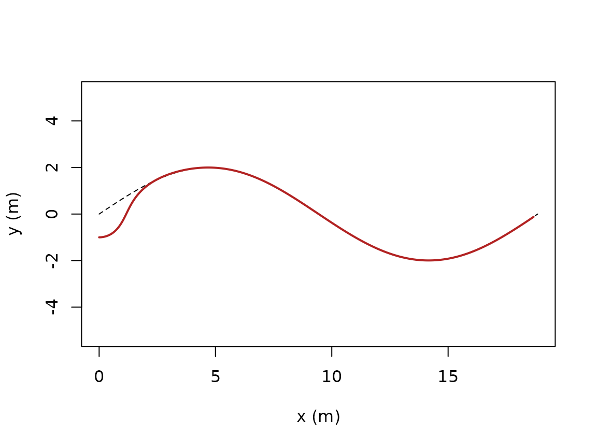
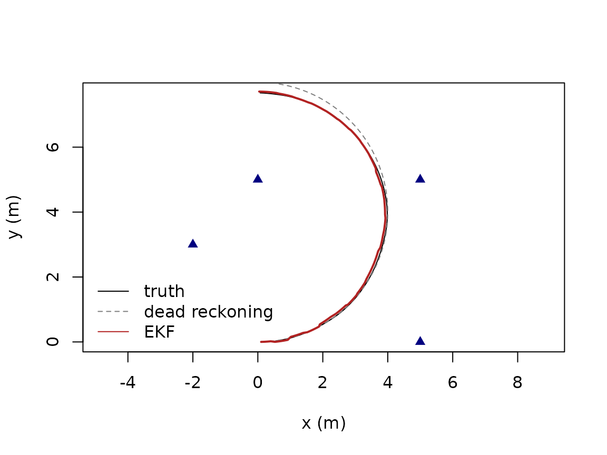
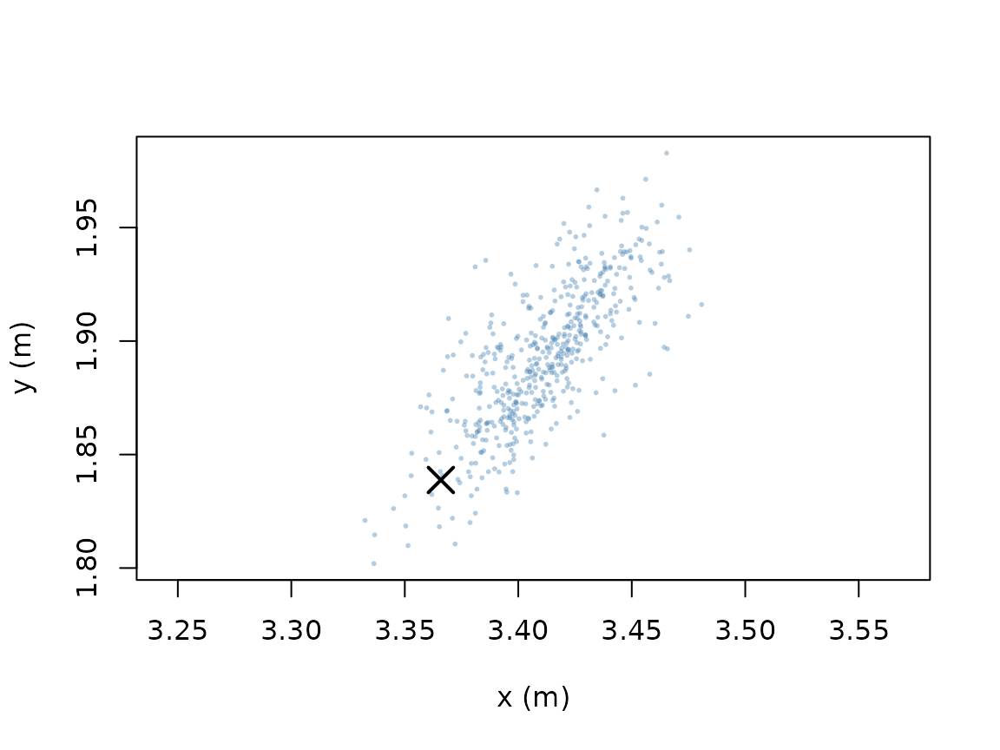

Mobile robots: motion models, path following and localization
Source:vignettes/mobile-robots.Rmd
mobile-robots.RmdPlanar robots have pose x = (x, y, \theta) with the heading wrapped to [-\pi, \pi). Body velocities are (v, \omega): forward speed along the body x axis and turn rate.
The unicycle and exact integration
\dot x = v\cos\theta, \qquad \dot y = v\sin\theta, \qquad \dot\theta = \omega.
For constant controls the solution is an arc of radius v/\omega:
x' = x + \frac{v}{\omega}\left(\sin(\theta + \omega\Delta t) - \sin\theta\right), \quad y' = y - \frac{v}{\omega}\left(\cos(\theta + \omega\Delta t) - \cos\theta\right).
unicycle_step() evaluates this arc in the equivalent
chord form
\begin{pmatrix} x' \\ y' \end{pmatrix} = \begin{pmatrix} x \\ y \end{pmatrix} + v\Delta t \, \operatorname{sinc}\!\left(\tfrac{\omega\Delta t}{2}\right) \begin{pmatrix} \cos(\theta + \omega\Delta t / 2) \\ \sin(\theta + \omega\Delta t / 2) \end{pmatrix},
which equals X \exp(\widehat{(v, 0, \omega)}\Delta t) on SE(2) and, unlike the v/\omega form, stays accurate as \omega \to 0. There is no time discretization error for piecewise constant controls.
unicycle_step(c(0, 0, 0), v = pi / 2, omega = pi / 2, dt = 1)
#> x y theta
#> 1.000000 1.000000 1.570796
sim <- mobile_simulate(robot_unicycle(), c(0, 0, 0), cbind(1, rep(2 * pi / 10, 10)), dt = 1)
round(sim[11, ], 12)
#> time x y theta
#> 10 0 0 0Differential drive
With wheel radius r and track width b: v = r(\omega_R + \omega_L)/2 and \omega = r(\omega_R - \omega_L)/b.
dd <- robot_diffdrive(wheel_radius = 0.05, track_width = 0.3)
dd
#> <robot_mobile> differential drive, wheel radius 0.05 m, track 0.3 m
diffdrive_forward(dd, omega_left = 10, omega_right = 12)
#> v omega
#> 0.5500000 0.3333333
diffdrive_inverse(dd, v = 0.5, omega = 1)
#> left right
#> 7 13Wheel odometry integrates encoder increments as arcs:
Kinematic bicycle
Steering angle \delta and wheelbase
L give \omega
= v\tan\delta / L. Steering beyond max_steer is an
error unless saturate = TRUE.
car <- robot_bicycle(wheelbase = 2.5, max_steer = 0.5)
U <- cbind(2, c(rep(0, 5), rep(0.3, 10), rep(-0.3, 10)))
traj <- mobile_simulate(car, c(0, 0, 0), U, dt = 0.5)
plot(traj[, "x"], traj[, "y"], type = "b", asp = 1, xlab = "x (m)", ylab = "y (m)")
try(mobile_simulate(car, c(0, 0, 0), cbind(1, 0.8), 1))
#> Error : Steering 0.8 exceeds max_steer at step 1.Pure pursuit
Pure pursuit steers toward a lookahead point an arclength L_d ahead along the path. With that point at (x_L, y_L) in the body frame, the commanded curvature is the circle through the robot and the point, \kappa = 2 y_L / (x_L^2 + y_L^2); on the path the denominator is close to L_d^2.
s <- seq(0, 2 * pi, length.out = 80)
path <- cbind(3 * s, 2 * sin(s))
x <- c(0, -1, 0)
track <- x
for (i in 1:2000) {
u <- pure_pursuit(x, path, lookahead = 1, speed = 1)
if (u$done) break
x <- unicycle_step(x, u$v, u$omega, 0.05)
track <- rbind(track, x)
}
plot(path, type = "l", lty = 2, asp = 1, xlab = "x (m)", ylab = "y (m)")
lines(track[, 1], track[, 2], col = "firebrick", lwd = 2)
Landmark measurements
landmark_measurements() returns range and bearing
(relative to the heading) to each landmark within range, optionally with
Gaussian noise.
Extended Kalman filter
ekf_predict() propagates the mean through the exact
unicycle model and the covariance with its analytic Jacobians:
P^- = F P F^\top + G Q G^\top.
ekf_update() linearizes range and bearing, wraps the
bearing innovation (so a measurement of -\pi +
\epsilon near a prediction of \pi -
\epsilon gives a small innovation, not one near 2\pi), and updates the covariance in Joseph
form, P = (I - KH)P^-(I - KH)^\top +
KRK^\top, which stays symmetric positive semidefinite.
Q <- diag(c(0.02, 0.01))
R <- diag(c(0.05, 0.002))
f <- robot_ekf(c(0, 0, 0), diag(0.01, 3), L, Q, R)
truth <- c(0, 0, 0)
odo <- c(0, 0, 0)
set.seed(7)
est <- tru <- dr <- matrix(NA, 120, 3)
for (k in 1:120) {
u <- c(1, 0.25)
un <- u + as.numeric(rnorm(2) %*% chol(Q))
truth <- unicycle_step(truth, un[1], un[2], 0.1)
odo <- unicycle_step(odo, u[1], u[2], 0.1)
f <- ekf_predict(f, u, 0.1)
if (k %% 5 == 0) f <- ekf_update(f, landmark_measurements(truth, L, R, max_range = 6, seed = k))
est[k, ] <- f$mean
tru[k, ] <- truth
dr[k, ] <- odo
}
plot(tru[, 1:2], type = "l", asp = 1, xlab = "x (m)", ylab = "y (m)")
lines(dr[, 1:2], col = "grey50", lty = 2)
lines(est[, 1:2], col = "firebrick", lwd = 2)
points(L, pch = 17, col = "navy")
legend("bottomleft", c("truth", "dead reckoning", "EKF"),
col = c("black", "grey50", "firebrick"), lty = c(1, 2, 1), bty = "n")
f
#> <robot_ekf> mean: 0.12193, 7.6401, -3.1401
#> std devs: 0.06725, 0.04176, 0.02353Unscented Kalman filter
robot_ukf() has the same interface as the EKF but
replaces linearization with the unscented transform: 2n + 1 sigma points of the state (augmented
with the control noise for prediction) are pushed through the exact
motion and measurement models and recombined, with headings and bearings
averaged on the circle. It needs no Jacobians and captures some
second-order effects.
fu <- robot_ukf(c(0, 0, 0), diag(0.01, 3), L, Q, R)
fe <- robot_ekf(c(0, 0, 0), diag(0.01, 3), L, Q, R)
truth <- c(0, 0, 0)
set.seed(7)
err <- matrix(NA, 120, 2, dimnames = list(NULL, c("ekf", "ukf")))
for (k in 1:120) {
u <- c(1, 0.25)
un <- u + as.numeric(rnorm(2) %*% chol(Q))
truth <- unicycle_step(truth, un[1], un[2], 0.1)
fe <- ekf_predict(fe, u, 0.1)
fu <- ukf_predict(fu, u, 0.1)
if (k %% 5 == 0) {
z <- landmark_measurements(truth, L, R, max_range = 6, seed = k)
fe <- ekf_update(fe, z)
fu <- ukf_update(fu, z)
}
err[k, ] <- c(sqrt(sum((fe$mean[1:2] - truth[1:2])^2)), sqrt(sum((fu$mean[1:2] - truth[1:2])^2)))
}
colMeans(err)
#> ekf ukf
#> 0.04894947 0.04926721
fu
#> <robot_ukf> mean: 0.12273, 7.6396, -3.1402
#> std devs: 0.06727, 0.04176, 0.02353Particle filter
The particle filter represents the belief with weighted samples. It handles multimodal beliefs that the EKF cannot. Weights use the Gaussian likelihood of the wrapped residuals in log space; resampling is low variance (systematic) and happens when the effective sample size drops below half the particles. The heading estimate is the weighted circular mean.
pf <- robot_particle_filter(500, c(0, 0, 0), diag(c(0.2, 0.2, 0.1)), L, Q, R, seed = 1)
truth <- c(0, 0, 0)
for (k in 1:40) {
truth <- unicycle_step(truth, 1, 0.25, 0.1)
pf <- pf_predict(pf, c(1, 0.25), 0.1, seed = k)
pf <- pf_update(pf, landmark_measurements(truth, L, R, seed = 1000 + k), seed = k)
}
est <- pf_estimate(pf)
rbind(truth = truth, estimate = est$mean)
#> x y theta
#> truth 3.365884 1.838791 1.000000
#> estimate 3.406496 1.884010 1.006056
est$ess
#> [1] 343.2952
plot(pf$particles[, 1:2], pch = 16, cex = 0.4, col = grDevices::adjustcolor("steelblue", 0.4),
asp = 1, xlab = "x (m)", ylab = "y (m)")
points(truth[1], truth[2], pch = 4, cex = 2, lwd = 2)
Filters are values: each step returns a new object and leaves the old one unchanged, which makes it easy to compare runs.